| ||||||
Asynchronous pluggable protocols enable developers to create pluggable protocol handlers, MIME filters, and namespace handlers that work with Microsoft® Internet Explorer version 4.0 and later and a URL moniker. This section covers the pluggable protocol functionality exported by the Urlmon.dll dynamic-link library (DLL). For information about the other APIs exported by the Urlmon.dll, see the Asynchronous and URL Monikers and URL Security Zones articles.
Applications can use pluggable protocol handlers to handle a custom Uniform Resource Locator (URL) protocol scheme or filter data for a designated MIME type.
The ability to handle a custom URL protocol scheme using a pluggable protocol handler allows developers to implement new or custom protocol schemes for Internet Explorer 4.0 (and later) and for applications that use URL monikers. The default pluggable protocol handler included with Internet Explorer handles existing protocol schemes, such as HTTP and FTP.
Pluggable MIME filters can be used to filter data for a particular MIME type. Unlike standard pluggable protocol handlers and pluggable namespace handlers, which only provide data, pluggable MIME filters both read and provide data. The pluggable MIME filter's implementation of the IInternetProtocolSink interface reads the data downloaded by the pluggable protocol handler. After the data has been processed, the pluggable MIME filter's implementation of IInternetProtocol allows the system to retrieve the processed data.
Let's say that a new protocol scheme has been introduced and your company wants to provide support for users of Internet Explorer 4.0 and later. Pluggable protocols allow you to provide a new protocol handler that will be called for any requests that use the new protocol scheme.
Or, say your company wants to design products that will help parents keep their children from reading profanity on the Internet. You could design a pluggable MIME filter, register it to handle the text/* MIME types, and have it replace all profanity with <BEEP> or something similar. Any content that has a matching MIME type, such as a Web page (whose MIME type is usually text/html), will call the pluggable MIME filter and pass the filtered data to the user.
This documentation assumes that you have an understanding of Microsoft® Win32® programming. Also, you should have an understanding of OLE and COM programming and of the format and syntax of a URL. For more information, see RFC 1738, Uniform Resource Locators (URL). You can find this document at ftp://ftp.isi.edu/in-notes/rfc1738.txt. 
To compile programs that use the functionality provided in Urlmon.dll, make sure the Urlmon.h header file is in the include directory and the Urlmon.lib library file is in the library directory of the C/C++ compiler you use.
A URL follows the syntax described in RFC 1738, which specifies a protocol scheme followed by a scheme-specific portion (<scheme>:<scheme-specific portion>). For example, in the URL http://www.microsoft.com/, "http" is the scheme and "//www.microsoft.com/" is the scheme-specific portion.
The beginning section of the scheme-specific portion of the URL contains the server name. This portion of the URL is often referred to as the URL namespace.
Internet Explorer uses two mechanisms for registering new URL protocol handlers. The first method is to register a URL protocol and its associated application so that all attempts to navigate to a URL using that protocol launch the application (for example, registering applications to handle mailto: or news: URLs). The second method uses the Asynchronous Pluggable Protocols API, which allows you to define new protocols by mapping the protocol scheme to a class.
For information about how to register an application for a particular URL protocol, see Appendix A: Registering an Application to a URL Protocol.
Asynchronous pluggable protocols offer three ways to map a protocol scheme to a class:
Note All asynchronous pluggable protocols must support the BINDF_NO_UI and BINDF_SILENTOPERATION flags.
Interfaces related to asynchronous pluggable protocols
Functions related to asynchronous pluggable protocols
An asynchronous pluggable protocol handler is an apartment-threaded Component Object Model (COM) object that handles any calls made to the protocol scheme for which it is registered. When a client application makes a request, Urlmon looks up the protocol scheme in the registry and creates an instance of the protocol handler registered for that protocol scheme. If the protocol scheme was successfully mapped to the class identifier (CLSID) of a protocol handler, CoCreateInstance is called with that class asking for an IClassFactory interface. An instance of the protocol handler is obtained with IClassFactory::CreateInstance.
To register a custom URL protocol, add a key for the protocol scheme of the custom URL protocol to the registry under HKEY_CLASSES_ROOT\PROTOCOLS\Handler\protocol_scheme. Under that key, the string value, CLSID, must be set to the CLSID of the protocol handler.
To register the custom protocol scheme example, you would have to add a key named example to the registry under HKEY_CLASSES_ROOT\PROTOCOLS\Handler. Under the new key, HKEY_CLASSES_ROOT\PROTOCOLS\Handler\example, the string value, CLSID, must be assigned the CLSID of the protocol handler. Any URLs with the protocol scheme example: would be handled by the protocol handler associated with the CLSID value.
The protocol handler cannot use any Microsoft® Windows® messaging to switch back to the thread it was instantiated on, since the protocol handler must work on non-GUI threads.
Note All asynchronous pluggable protocols must support the BINDF_NO_UI and BINDF_SILENTOPERATION flags.
Temporary pluggable namespace handlers are used for all URLs that use the protocol scheme the temporary pluggable namespace handler was registered for on a particular process. You can register and unregister a temporary pluggable namespace handler by using the IInternetSession interface.
A pluggable MIME filter is an asynchronous pluggable protocol that receives data through a stream, performs some operation on the data, and returns a data stream. The output data might be in a different format from the original stream.
Multiple pluggable MIME filters can be registered either temporarily or permanently. Temporarily registered pluggable MIME filters are called first, in the reverse order in which they were registered. So pluggable MIME filters registered last will be called first.
For information about how Internet Explorer 4.0 determines MIME types, see Appendix A: MIME Type Detection in Internet Explorer.
Note All asynchronous pluggable MIME filters must support the BINDF_NO_UI and BINDF_SILENTOPERATION flags.
Also, pluggable MIME filters are only invoked by Internet Explorer for the resource specified by the URL. The MIME filter will not be invoked for other resources (such as images on an HTML page) that are associated with the resource specified by the URL.
You must register a permanent pluggable MIME filter in the registry with the key HKEY_CLASSES_ROOT\PROTOCOLS\Filter\<mime_filter> and with a value set to the CLSID of the pluggable MIME filter.
You can register and unregister a temporary pluggable MIME filter by using the IInternetSession interface.
Follow these steps to create an asynchronous pluggable protocol handler:
After the protocol handler is created and added to the registry, the handler can be used by any application that uses the functionality provided by Urlmon.dll. The following steps provide the general order of the calls made between Urlmon.dll and your protocol handler when a URL with the protocol scheme you registered your handler for is called:
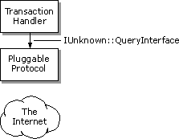
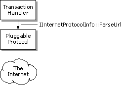
When updating a subscription, Internet Explorer calls the pluggable protocol handler's IInternetProtocolInfo::QueryInfo method with the QUERYOPTION value set to QUERY_USES_CACHE. The Internet Explorer subscription mechanism will support only pluggable pluggable protocol handlers that use the Internet cache and return TRUE for the QUERY_USES_CACHE flag.
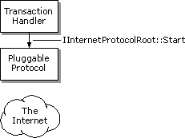
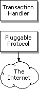
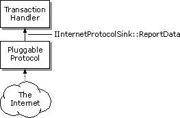
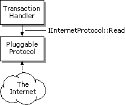
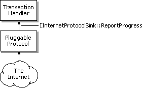
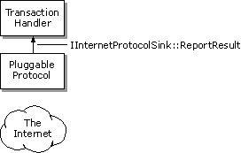
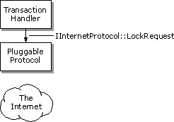
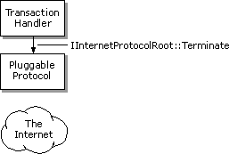
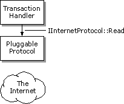
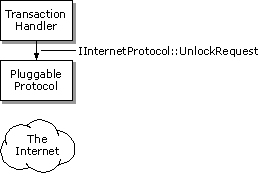
Note Your pluggable protocol handler's IInternetProtocol::Read method might continue to be called by the Urlmon.dll even after the method has indicated that all the data has been read. All asynchronous pluggable protocol handlers must be prepared to handle this possibility.
A pluggable MIME filter is essentially an asynchronous pluggable protocol handler that implements an IInternetProtocolSink interface. Urlmon.dll uses the pluggable MIME filter's implementation of IInternetProtocolSink to notify the filter that Urlmon.dll has data ready to be filtered.
Also, filters that handle multiple MIME types must register a separate CLSID for each MIME type they handle:
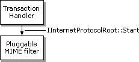
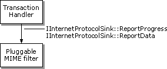
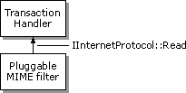
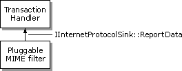
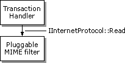
More information will be provided in future versions of this documentation.
Did you find this topic useful? Suggestions for other topics? Write us!
© 1999 Microsoft Corporation. All rights reserved. Terms of use.